Fall Star Testing, Candidates tab, both schools shown (the widest case: the second line carries the school). Today the roster picks its tablet columns from the window’s width, so with the side panel taking 72 px (Standard) or 96 px (Largest) the Candidate and Testing for columns get squeezed to 40–60 px and text runs into text. After (v1.053, built per v1.130): const narrowRoom = usePageRoomBelow(LIMIT); const stacked = isPhone || narrowRoom; for the roster only. Below the limit the roster draws the phone’s stacked rows (the ones phones already show); at or above it nothing changes. The limit is a choice for you (bottom of the picture): (a) 640 or (b) 696 px of room. Recommended: (b) 696. Every size in the Today/After columns stacks with either limit.Dialogs, ⋯ menus and the rest of the page keep following the window.
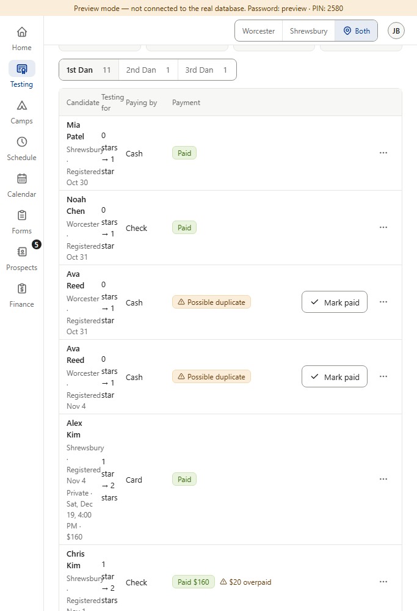
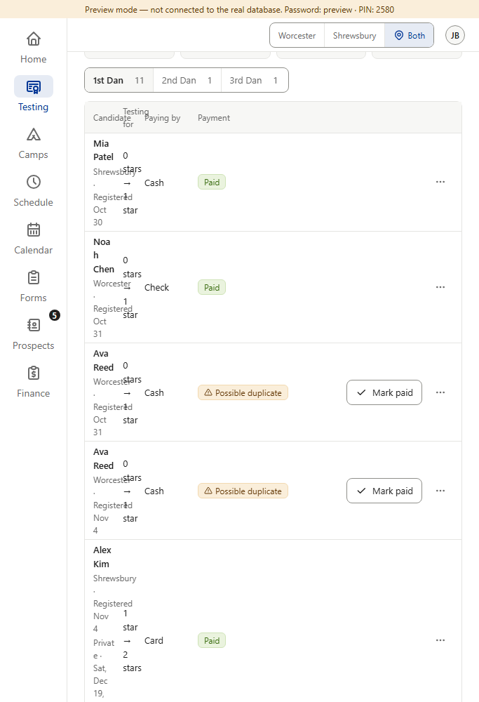
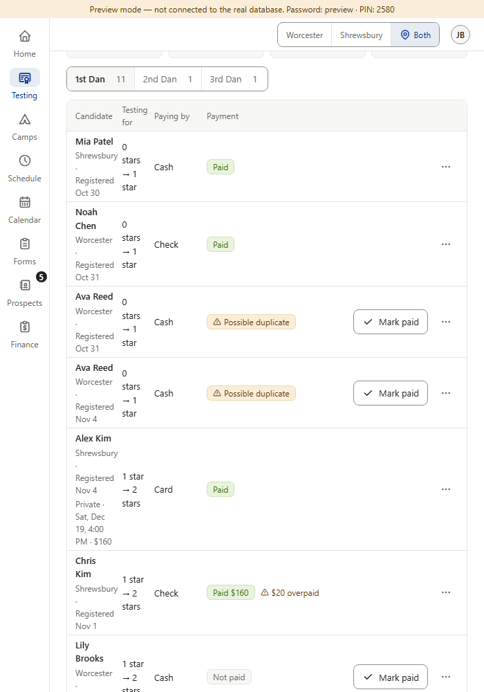
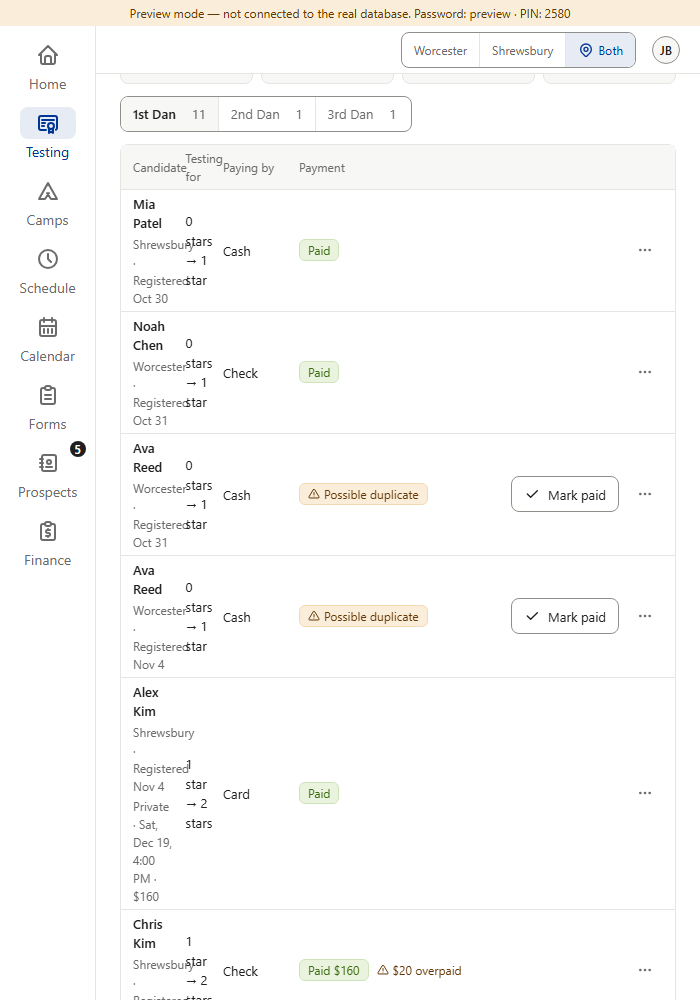
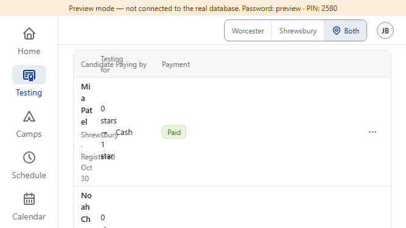
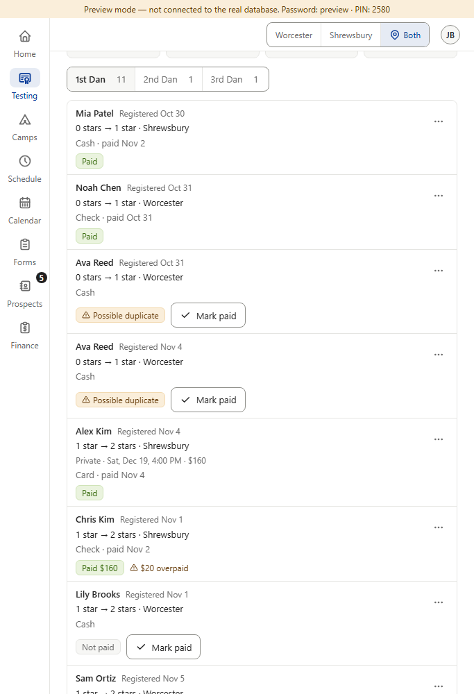
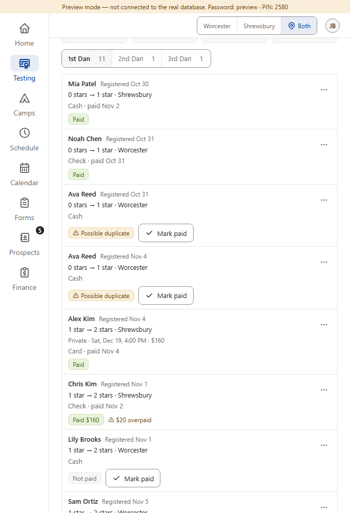
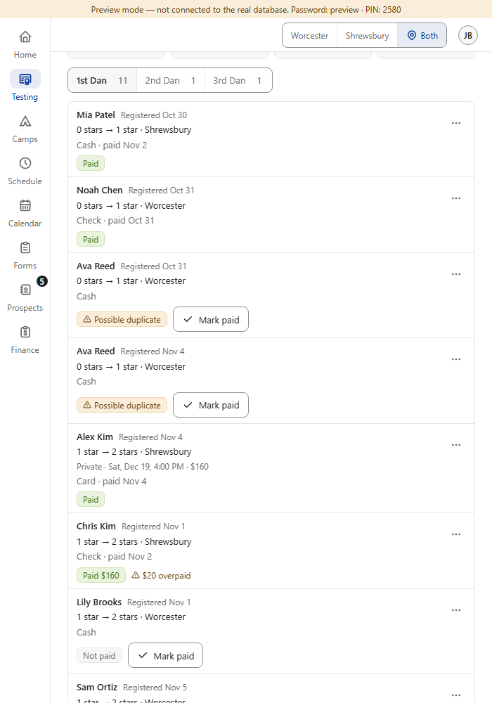
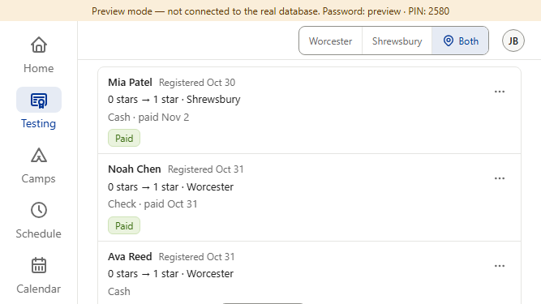
data-page-room), text boxes of two cells of one row that overlap, and cells whose text is wider than the cell. Text over text stops at room 617; text sticking out of its column stops at 636 (632 still has 6); 640 is the first round number above both. From room 696 the columns look exactly as at 820 (the approved tablet): the “Testing for” header fits on one line from 684, and names take at most 3 lines from 692–696. Standard gives the same results at the same room (the room is what counts). With a mouse the actions column is 24 px narrower, so the roster is clean from about 616. One school selected and Hide private details need less room. PC columns (1024+) are clean at 1024 with Largest (room 928). Measured in Chrome on Windows, so in Segoe UI (the app’s font list is system-ui, -apple-system, Segoe UI, Roboto). An iPad draws San Francisco, which is probably a little wider, so the build re-measures in the app’s own font on an iPad before the number is final.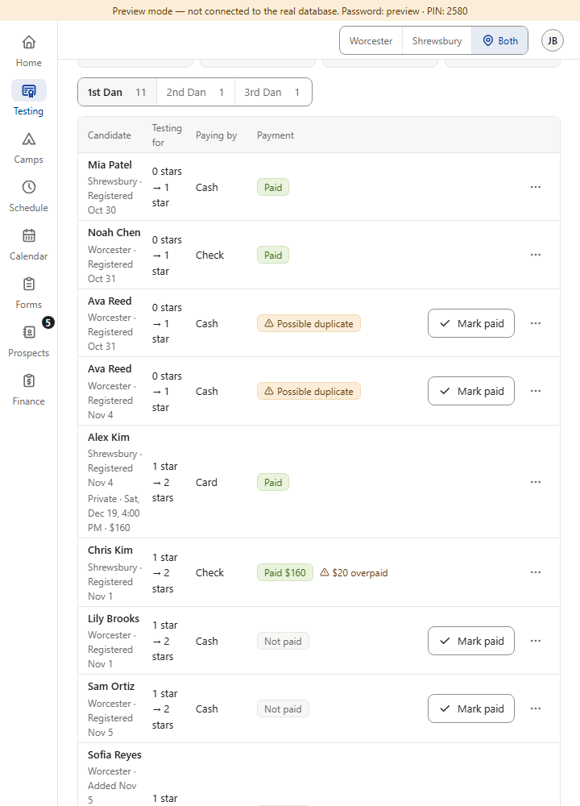
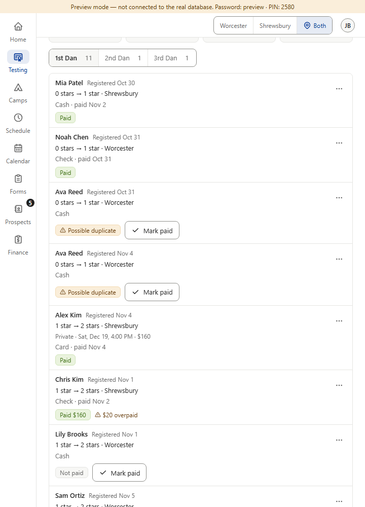
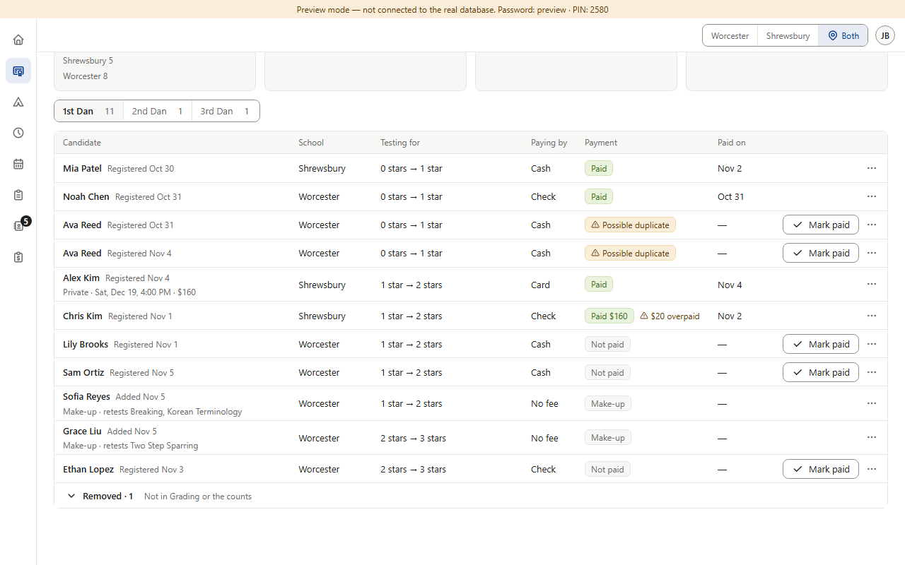
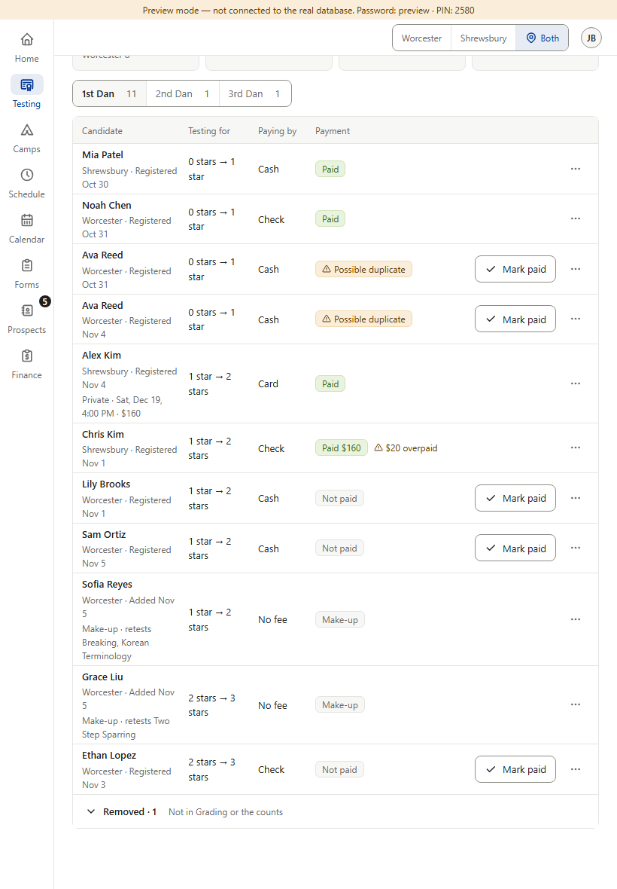
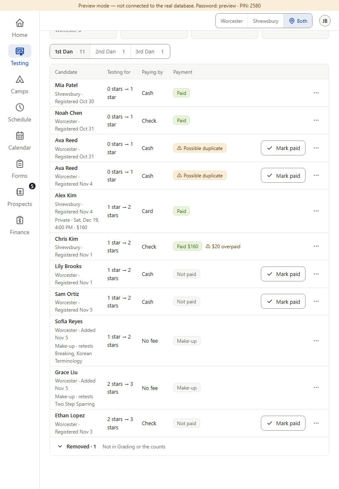
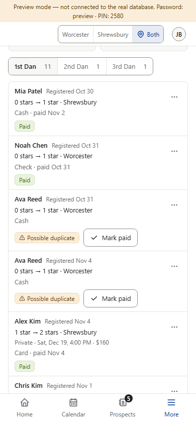
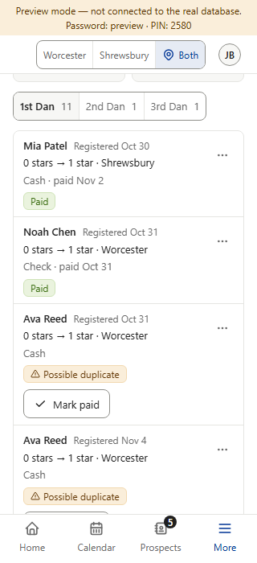
How the pictures were made. Star testing · rolling check pass 2, L-02. Preview screenshots (fake database, admin, Fall Star Testing, “Show both schools”), Panel size set through the Account menu. Today = the app as it is. After = drawn on the real page by mock-room.js: the phone roster’s own markup was copied from the app at a 600 px phone window (same event, same rows) and put in place of the tablet roster at each target size. Its styles (.st-crow-c.is-phone, .ev-srow-main …) are not behind a phone-width rule, so they draw as they will once the roster follows a class. So the rows are exactly the phone’s; what a copy can’t show: buttons don’t work in the drawn roster, and the tablet page around it (summary cards, Dan switch, top bar) is today’s — which is also what the change keeps. Nothing in the app was changed. Amber = text over text, or text sticking out of its column.